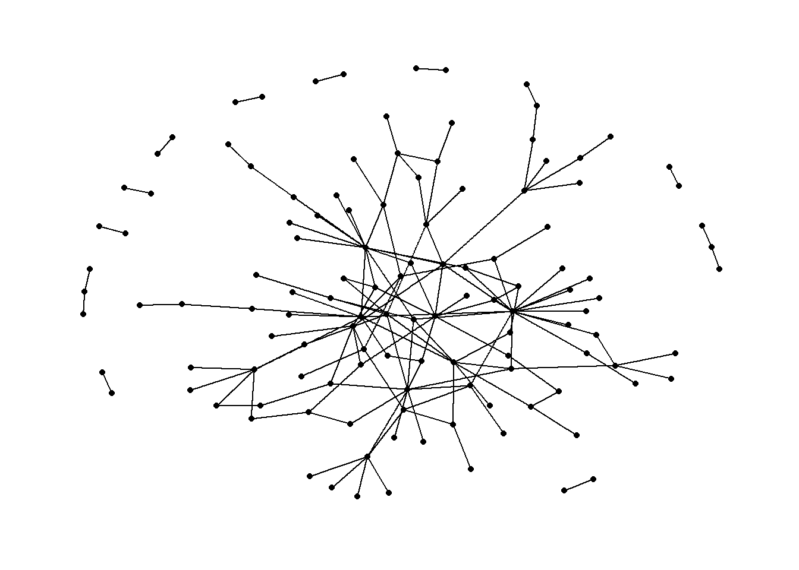

pacman::p_load(jsonlite, tidygraph, ggraph, visNetwork, lubridate, tidyverse)Take-home Exercise 2: KickStarter
Declaimer
This document aims to provide you guidance on how to get started with Takehome Exercise 2, especially how to prepare the network data. It is not a model answer.
Getting Started
The code chunk below will be used to install and load the necessary R packages to meet the data preparation, data wrangling, data analysis and visualisation needs.
Data Import
In the code chunk below, fromJSON() of jsonlite package is used to import mc2_challenge_graph.json into R environment.
mc2_data <- fromJSON("data/mc2_challenge_graph.json")Examine the list object created by using RStudio, especially nodes and links data tables.
Data Wrangling
Extracting the nodes
The code chunk is used to extract nodes data table from mc2_data list object and save the output in a tibble data frame object called mc2_nodes.
mc2_nodes <- as_tibble(mc2_data$nodes) %>%
select(id, shpcountry, rcvcountry)
Thing to learn
select()is used not only to select the field needed but also to re-organise the sequent of the fields.
Extracting the edges
The code chunk is used to extract edgess data table from mc2_data list object and save the output in a tibble data frame object called mc2_edges.
mc2_edges <- as_tibble(mc2_data$links) %>%
mutate(ArrivalDate = ymd(arrivaldate)) %>%
mutate(Year = year(ArrivalDate)) %>%
select(source, target, ArrivalDate, Year, hscode, valueofgoods_omu,
volumeteu, weightkg, valueofgoodsusd) %>%
distinct()
Things to learn
mutate()is used two times to create two derive fields.ymd()of lubridate package is used to covert arrivaldate field from character data type into date data type.year()of lubridate package is used to convert the values in ArrivalDate field into year values.
select()is used not only to select the field needed but also to re-organise the sequent of the fields.
Preparing edges data table
Things to learn from the code chunk below
filter()is used to select records whereby hscode is equal 306170 and Year is equal to 2028.group_by()is used to aggregate values by source, target, hscode, Year.summarise()andn()are used to count the aggregated records.- filter() is then used to perform two selections
- to select all records whereby source are not equal to target, and
- to select all records whereby the values of their weights field are greater than 20
mc2_edges_aggregated <- mc2_edges %>%
filter(hscode == "306170" & Year == "2028") %>%
group_by(source, target, hscode, Year) %>%
summarise(weights = n()) %>%
filter(source!=target) %>%
filter(weights > 20) %>%
ungroup()Preparing nodes data
Instead of using the nodes data table extracted from mc2_data, we will prepare a new nodes data table by using the source and target fields of mc2_edges_aggregated data table. This is necessary to ensure that the nodes in nodes data tables include all the source and target values.
id1 <- mc2_edges_aggregated %>%
select(source) %>%
rename(id = source)
id2 <- mc2_edges_aggregated %>%
select(target) %>%
rename(id = target)
mc2_nodes_extracted <- rbind(id1, id2) %>%
distinct()Building the tidy graph data model
The code chunk below is then used to build the tidy graph data model.
mc2_graph <- tbl_graph(nodes = mc2_nodes_extracted,
edges = mc2_edges_aggregated,
directed = TRUE)Visualising the network graph
In this code chunk below, appropriate functions from ggraph package are used to prepare the network graph.
ggraph(mc2_graph,
layout = "fr") +
geom_edge_link(aes()) +
geom_node_point(aes()) +
theme_graph()